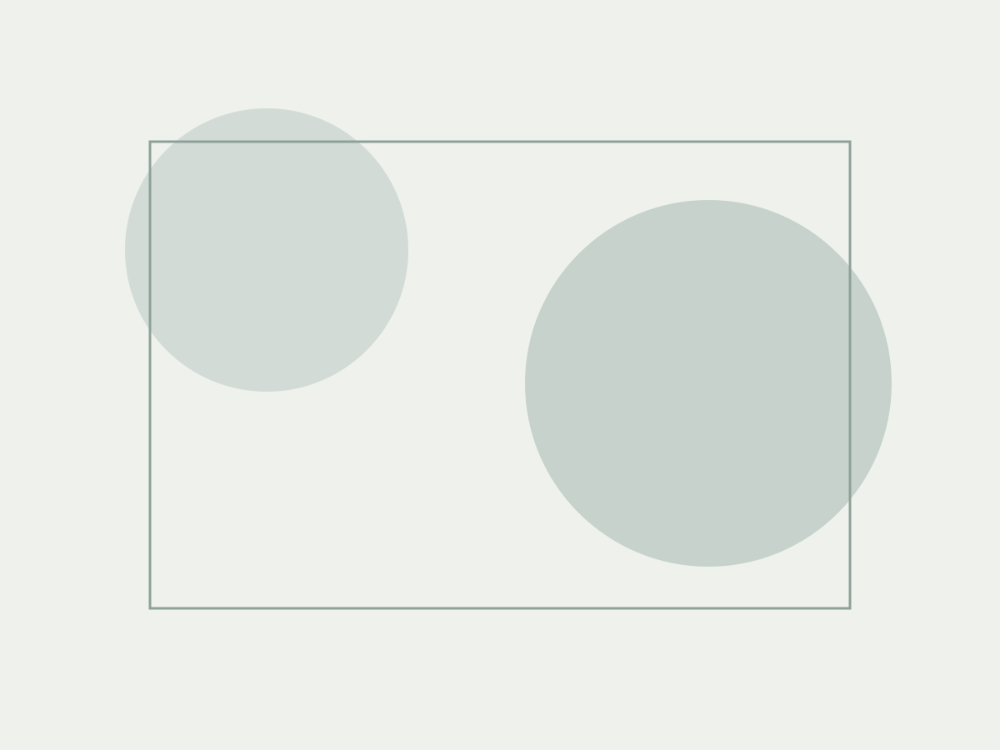

Page Focus
Privacy Policy
A crisp common format for practical writing, shared resources, and readable guidance. This page is part of the unified editorial refresh.
This page now follows a shared editorial format used across the repo: clean hierarchy, readable spacing, and stable navigation.

Format Update
Clean, Crisp, and Clear
The interface is intentionally minimal, with an improved header, consistent footer actions, and a predictable reading flow.
Each page includes three images to keep a visual rhythm while preserving legibility and performance.
Three-image visual structure for consistent pacing across the site.
Page Summary
Privacy
Structured Header
Consistent navigation and active-link behavior keep movement between pages straightforward.
Editorial Content Rhythm
Text sections are spaced for high legibility across desktop and mobile viewports.
Unified Footer
Every page ends with clear actions and live date/time context.